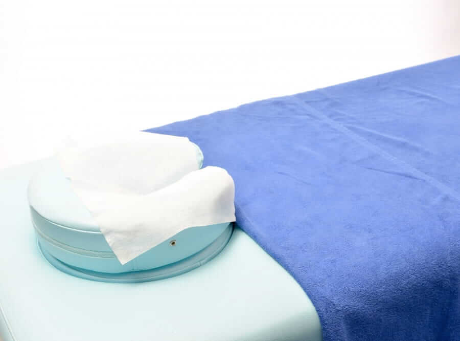

About
クリニックのご紹介院長紹介
院長の渡邊和則と申します。
平成10年に医師免許を取得し、その後脳神経外科専門医を取得。
大学病院や総合病院での経験を経て、平成20年に日本脳卒中学会脳卒中専門医を取得。 平成28年、福岡市に「渡邉脳神経外科クリニック」を開院させていただくことになりました。
“あなたの第一の相談相手”
当クリニックではつらい症状から些細な症状まで気軽に受診できる、 地域に密着したクリニックを目指しております。
ちょっとした軽い症状を放置し、取り返しのつかない事態となることも少なくありません。 どんなに些細な症状や心配事でも構いませんので、どうぞお気軽に受診ください。
渡邉脳神経外科クリニック院長
院内紹介
ご来院の皆さまがリラックスして診察を受けていただけるよう、木目を基調とした清潔感ある
落ち着いた空間造りを目指しています。
最新の装置を導入し、異常の早期発見、早期対応ができるように努めています。
他の医療機関とも連携体制を構築し、患者様に適切な医療を提供いたします。
